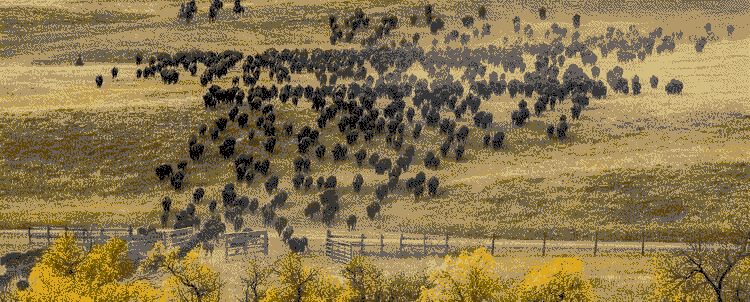

Hawé, Welcome!
Welcome to the official homepage of the Quapaw Nation Language
Department. Our site serves as the de facto home for Quapaw language
resources such as learning materials and curriculum, historical
documents, as well as our Okáxpa dictionary.
Not sure where to get started?
Use the buttons above to navigate to the different pages of our site.
We recommend starting on the about page to
learn more about us and the features of this site!
Looking to enroll in language classes?
All language class sign-ups are facilitated via our
online form.
Have a question for us?
We accept inquiries via the form over on our
contact page. Please include your name and
email address on the form;
if you do not provide a valid email address we are unable to respond
to your message.
Interested in learning more about the Quapaw Nation?
You'll find further information and events over on our tribal
government's
official website. Additionally,
any events hosted by our department are posted to the site's calendar.
Site Updates & News
Fall 2025 "Lunch & Learn" Class Schedule
We are happy to announce the return of our popular “lunch and learn"-style language sessions, which will occur the first three Tuesdays in October.
This month’s series is built around harvest and Halloween themes!
Join us as we share a meal and learn Quapaw together over the lunch hour.
Our department will provide enough meals for 20 people, but we will not be limiting class size if more attend.
Please keep in mind that food will be first-come, first-serve.
Dates: October 7th, 2025 | October 14th, 2025 | October 21st, 2025
Time: 12:00pm-1:00pm
Location: Native American Church (NAC) Summer House -
5681 S. 630 Road, Quapaw, OK
Posted September 2nd, 2025
NOW OPEN: 2025 Dhegiha Language Conference Registration

Registration is now open for the 2025 Dhegiha Language Conference, which is to be held at Downstream Casino & Resort on July 23rd and 24th, 2025. At this event, our Dhegiha tribes (Osage, Ponca, Kaw, Omaha, and Quapaw) will come together to celebrate our languages and share our efforts in revitalizing them. Any and all are welcome to attend this conference, tribal member or not. The registration fee is waived for all Quapaw Nation employees.
Click here to fill out the online registration form. Registration forms are due by close of business on July 11th, 2025. We look forward to seeing you there!
Please note that if you are not a tribal employee or former language student, you must fill out the paper registration form listed on the Dhegiha Preservation Society Facebook page.
Posted June 23rd, 2025
Spring "Lunch & Learn" Class Schedule

Our department will be hosting "lunch and learn"-style classes during the month of May. These free in-person classes are open to all skill levels and offer an opportunity to learn Quapaw together during the lunch hour.
Sessions will be held at the Native American Church Summer House (located at 5681 S. 630 Road in Quapaw, OK) from 12:00PM-1:00PM on the following dates:
- Friday, May 9, 2025
- Friday, May 16, 2025
- Friday, May 23, 2025
- Friday, May 30, 2025
A lunch from Chick-Fil-A will be provided while supplies last. No registration is required.
Posted May 5th, 2025
Winter Workshop Class Materials
 Have you missed a class (or two) of our Winter Workshop? We still have one more coming up on March 27th, 2025! If you're missing the learning materials for the class, click here to download a copy.
Have you missed a class (or two) of our Winter Workshop? We still have one more coming up on March 27th, 2025! If you're missing the learning materials for the class, click here to download a copy.
Posted February 25th, 2025
New Valentine's Day Blog Post!
It's almost Valentine's Day, so that means our department cooked up some keen Okáxpa memes for you to send to family
and friends. Check our blog post
here to learn more!
Posted February 3rd, 2025
"Deconstructing Quapaw Stories" Winter Workshop - Enrollment Now
Open!

Enrollment is now open for our new language workshop titled,
“Deconstructing Quapaw Stories.”
These classes are free and open to language-learners of any experience
level. Billy (Supernaw) Proctor will be conducting the class. Students
will learn about the structure of the Quapaw language through study of
a story told by a fluent speaker, as originally transcribed in the
1890s.
The scheduled dates for the workshop sessions are as follows:
- Thursday, January 30th, 2025 - 6pm to 7pm CST
- Thursday, February 20th, 2025 - 6pm to 7pm CST
- Thursday, March 27th, 2025 - 6pm to 7pm CST
Please note that these classes will be held
online only via Microsoft Teams . You may join the
class from a mobile device or desktop computer. To sign up, fill out
our online
enrollment form!
Posted January 14th, 2025